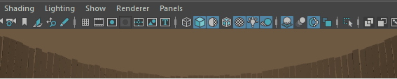

从菜单中选择这些选项。

- 动画详细信息(Animation Details)
-
启用或禁用动画详细信息列表的显示，包括“播放速度”(Playback Speed)、“当前角色”(Current Character)以及“IK 融合”(IK Blend)。详细信息显示在面板右下角的“帧速率”上方。默认设置为禁用。
- 缓存(Cache)
-
显示播放缓存和内存使用情况的详细信息。注： 您可以从解算工具包(Evaluation Toolkit)中启用此选项。请参见解算工具包(Evaluation Toolkit)主题中的“缓存”(Caching)以及使用“缓存播放”(Cached Playback)以提高播放速度。
- 摄影机名称(Camera Names)
-
在视图面板的底部正中显示摄影机名称（例如，透视、顶、侧、前）。默认设置为启用。
- 大写锁定(Caps Lock)
-
显示启用“大写锁定”(Caps Lock)时的视图中消息。默认设置为启用。
- 当前资产(Current Asset)
- 如果已设置，则创建的任何后续节点都将自动添加到该资产。
- 当前帧(Current Frame)
-
在右下角显示当前播放帧的编号。默认设置为禁用。
- 解算(Evaluation)
-

指示当前的解算模式。请参见“首选项 > 动画”(Preferences > Animation)中的解算(Evaluation)以更改解算模式。
- EM 状态(EM State)
-
触发解算时，解算管理器会重建 EM 图表，并且 HUD“EM 状态”(EM State)会显示“构建”(Built)（后跟“就绪”(Ready)）。
“EM 状态”(EM State)指示解算管理器是否具有最新的解算图，或者下次由播放触发解算时它是否需要重建图表。例如，在 DG 中进行某些更改（如删除节点连接）时，解算管理器将不再与 DG 同步，因此平视显示仪显示“需要重建”(Rebuild required)。
- 操纵(Manipulation)
-
用于查看 EM 部分解算何时处于活动状态。有 3 种操纵状态：“启用”(On)、“禁用”(Off)和“已禁用”(Disabled)。请参见解算工具包(Evaluation Toolkit)中的“操纵”(Manipulation)选项。
- GPU 覆盖(GPU Override)
- 如果“GPU 覆盖”(GPU Override)选项处于活动状态（仅当使用“串行”(Serial)或“平行”(Parallel)模式时才会出现此情况），则“GPU 覆盖”(GPU Override)将显示，它对 GPU（而不是 CPU）解算的网格顶点数（数千个）进行计数。例如，如果 HUD 显示“GPU 覆盖: 已启用(94k)”(GPU Override: Enabled (94k))，则这指示 GPU 正在对 94,000 个顶点解算。在顶点计数的旁边，使用 GPU 的 deformerEvaluator 中的节点数显示在方括号中。例如，[46/184] 表示 deformerEvaluator 中的 184 个节点中有 46 个节点使用 GPU。
注： “GPU 覆盖”(GPU Override) HUD 设置不显示动画拓扑中的顶点。例如，如果使用簇变形器设置球体的动画，则 GPU 不会划分它。
- 内存限制
- 显示专用于缓存播放的内存量（以百分比为单位）。请参见缓存播放首选项(Cached Playback preferences)中的“% RAM”(% of RAM)。
- 焦距(Focal Length)
-
在右下角显示当前摄影机的焦距。默认设置为禁用。
- 游戏顶点计数(Game Vertex Count)
-
显示实时游戏引擎（Unreal 或 Unity）将解算的顶点数。若要看到此选项，必须加载 gameVertexCount 插件。
- 在 Unreal 模式下：
- 切线模式(Tangent Mode)
- 配置 Unreal 解算器用于计算顶点切线的方法：
- 无(None)：不导入切线。这不适用于映射法线的着色器。
- Maya：使用 Maya 的内置法线生成方法。
- MikkT：在 Unreal 的 FBX 网格导入中使用 MikkTSpace 法线生成方法。
- 在 Unity 模式下：
- 焊接顶点(Weld Vertices)
- 合并完全共用相同特性的重叠顶点（包括 UV、法线、切线和顶点颜色）。
- 法线(Normals)
- 配置法线的计算方式：
- 导入(Import)：从 FBX 文件导入法线。如果文件不包含法线，将计算法线。
- 计算(Calculate)：根据以下因素计算法线。
注： 此设置适用于非常平滑、有机或高多边形模型。由于 Unity 以单个角度为基础处理硬边，因此此选项可能会错误地平滑模型的某些部分。通常，建议手动平滑模型，然后使用上面的“导入”(Import)设置。
- 法线模式(Normals Mode)
- 配置 Unity 计算法线的方式：
- 未加权(旧版)(Unweighted (Legacy))：使用旧版（2017.1 之前的版本）方法计算法线。
- 未加权(Unweighted)：法线不加权。
- 区域加权(Area Weighted)：法线按面区域加权。
- 角度加权(Angle Weighted)：法线按每个面的顶点角度加权。
- 区域和角度加权(Area and Angle Weighted)：法线按面区域和每个面的顶点角度加权。
- 源平滑度(Smoothness Source)
- 配置 Unity 平滑边的方式：
- 首选平滑组(Prefer Smoothing Group)：使用导入文件中的平滑组（如果适用）
- 起始平滑组(From Smoothing Group)：仅使用导入文件中的平滑组。
- 起始角度(From Angle)：使用平滑角度确定边平滑度。
- 无(None)：不在硬边上分割顶点。
- 平滑角度(Smoothing Angle)
- 控制如何为硬边分割顶点。值越大，面越少。
- 无(None)：不导入法线。
- 切线(Tangents)
- 配置 Unity 解算器用于计算顶点切线的方法：
- 导入(Import)：从 FBX 文件导入顶点切线。
- 旧版(Legacy)：使用 Unity 的旧版法线生成算法。
- 无(None)：不导入切线。这不适用于映射法线的着色器。
- MikkT：在 Unity 的 FBX 网格导入中使用 Mikktspace 法线生成方法。
- 在 Unreal 模式下：
- 帧速率(Frame Rate)
-
在视口右下角显示当前视图的帧速率（单位：每秒帧数 (FPS)）。默认设置为禁用。
显示的帧速率是刷新帧速率。刷新帧速率表示 3D 视口连续刷新之间的时间。如果在 Maya 中播放或操纵对象，则刷新帧速率会更新。
播放帧速率受“实时”(Real-Time)与“播放每一帧”(Play Every Frame)设置的影响。显卡 vsync 设置（用于将视口显示与显示器刷新速率同步，并且可能是视口数增加时帧速率可能会降低的原因）。
- HIK 细节(HIK Details)
-
在右下角处显示场景的当前 HumanIK 关键帧模式。默认设置为禁用。
- 材质加载详细信息(Material Loading Details)
-
显示材质和纹理的加载进度。如果用于“首选项”(Preferences)窗口“显示”(Display)类别下的“延缓”(Deferred)和“平行”(Parallel)“材质加载模式”(Material Loading Mode)，则此信息最有用。有关详细信息，请参见显示首选项。
当材质实现完成且纹理加载完毕后，HUD 中的“要加载的材质”(Materials To Load)和“要加载的纹理”(Textures To Load)字段将指示 0。
- 对象详细信息(Object Details)
-
显示包含如下对象详细信息的列表：“背面”(Backfaces)、“平滑度”(Smoothness)、“实例”(Instance)、“显示层”(Display Layer)、“与摄影机的距离”(Distance From Camera)和“选定对象”(Selected Object)数。这些详细信息显示在面板的右上角。默认设置为禁用。
- 原点轴(Origin Axis)
-
在透视视图内的原点 (0, 0, 0) 处显示全局轴。默认设置为禁用。
- 粒子数(Particle Count)
-
显示场景中的粒子总数和选定 nParticle 的数目。“粒子数”(Particle Count)包含场景中的 nParticle 数目和经典粒子数目。
- 多边形计数(Poly Count)
-
显示关于视图面板中显示的可见对象的多边形统计信息，其中包括顶点、边、面、三角形以及 UV。该功能非常适用于游戏开发。左侧第一列中列出了场景中所有多边形的组件总数。第二列中列出了选定多边形的组件总数。第三列中列出了选定组件的总数。默认设置为禁用。
注：在 Viewport 2.0 中，“多边形计数”(Poly Count)包括场景中的所有对象，其中包括不在屏幕上的对象。另一方面，在“旧版默认视口”(Legacy Default Viewport)中显示的“多边形计数”(Poly Count)仅包括摄影机看到的对象。
“多边形计数”(Poly Count) >  中有两个选项。
中有两个选项。
- 框架(Cage)
-
显示面板中可见对象框架（原始网格）的多边形统计信息。
- 平滑网格预览(Smooth Mesh Preview)
-
显示面板中可见对象的多边形统计信息。
当显示方式设置为默认模式时，将显示框架统计信息。
当显示方式设置为“平滑网格预览”模式时，将显示关于已平滑对象的统计信息。
- 场景时间码(Scene Timecode)
-
在场景视图的右下角显示场景时间码。默认设置为禁用。另请参见设定和显示场景的时间码 。
- 选择详细信息(Select Details)
-
场景视图的右下角将显示“软选择”(Soft Selection)的当前状态。
- 对称(Symmetry)
-
如果“对称”(Symmetry)处于活动状态，则场景视图的中上部将显示当前对称轴。默认设置为启用。
- 视图轴(View Axis)
-
在所有视图的左下角显示全局轴。默认设置为启用。
- ViewCube
- 在视口的右上角显示 Viewcube。请参见 ViewCube 首选项。
- 视口渲染器(Viewport Renderer)
-
在视口的顶部正中显示视口类型和渲染引擎。默认设置为禁用。
- 视图中消息(In-view Messages)
-
显示或隐藏某些工具、模式和操作的消息显示。默认设置为启用。另请参见帮助首选项。
- XGen 信息(XGen Info)
- 显示 XGen 样条线的数量和使用的 GPU 内存量。
- 视图中消息(In-View Messages)
-
“视图中消息”(In-View Messages)选项用于在视口中显示或隐藏视图中消息。也可以在帮助首选项的“视图中消息”(IN-View Messages)部分中禁用这些消息。
视图中消息示例
- 视图中编辑器(In-View Editors)
- 显示或隐藏在执行许多不同的建模操作后显示的视图中编辑器(In-View Editors)。默认设置为启用。请参见视图中编辑器。